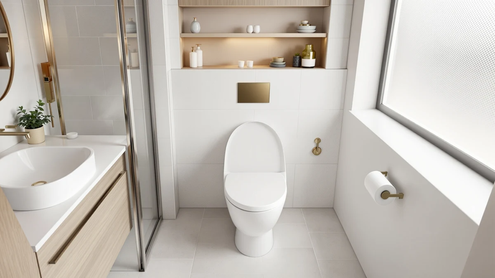

Highest Toilet Seat (2026)
Prices and picks verified as of September 2026. Independent, reader-supported reviews.


Quick Answer
After comparing specs, pricing and verified owner reviews across seven models, the Bio Bidet BB2000 is the highest toilet seat in this roundup, adding a heated seat, a warm water wash and a taller profile built around its internal components. If you want extra height without the electronics, the Bath Royale Soft Close and Bemis 170 cover round and elongated bowls at a fraction of the price.
Our pick: Bio Bidet BB2000 Electric Bidet — $489.00 Check Price on Amazon
Bottom line: our top pick is the Bio Bidet BB2000 Electric Bidet Toilet Seat at $489. The best budget option is the Bemis 170 Durable Plastic Toilet Seat at $17.99.
Things to Know Before You Buy
- Seat height mostly comes from what's built into the ring, electronics, foam, or a stacked flip-down layer, not from the bowl shape.
- Elongated bowls measure about 18.5 inches front to back versus 16.5 inches for round bowls, so measure before you buy.
- Electric bidet seats need a nearby grounded outlet and add the most height of any option we compared.
- Weight ratings vary widely in this category, up to 400 lbs on the Bath Royale seats, so check the number before you buy for a heavier household.
- Prices in this roundup span from $17.99 to $489.00, so decide first whether you need features or only a taller, sturdier seat.
The highest toilet seat in this comparison earns its height from what's built into it: heating elements, a warm water tank and remote electronics. After comparing specifications, pricing and verified owner reviews across seven models, the Bio Bidet BB2000 came out on top for that reason.
We built this list around a research process, not a lab. We compared each seat's stated dimensions, hinge hardware, material and weight rating with pricing pulled from Amazon, then cross-checked those specs against patterns in verified buyer reviews. A seat that looks tall in a product photo but draws repeated complaints about wobbling or cracking hinges gets ruled out fast, no matter how the marketing copy reads.
Seven seats made the final cut, spanning a $17.99 basic plastic ring up to a $489 electric bidet seat. The Bio Bidet BB2000 leads for anyone who wants the tallest, most feature-loaded option, the Quick Flip from Jool Baby works for families still potty training a toddler, and the Bath Royale and Bemis picks cover round and elongated bowls for buyers who want a taller, sturdier seat without the electronics bill.
Why You Should Trust Us
Ilane Tall has spent years comparing toilet seats, bidet attachments and bathroom hardware for Best Toilet Seats, and every guide on this site follows the same research-based standard. We do not accept payment for placement, and we do not claim to have installed or lived with every seat we cover. For this guide to the highest toilet seat options on the market, we cross-referenced manufacturer specifications, current pricing and verified Amazon reviews to separate seats that measurably add height and durability from ones that only look premium in a photo. When a claim can't be verified against real specs or owner feedback, we leave it out.
How We Picked
We started with every toilet seat in our database tagged for height, durability or bidet functionality, then narrowed the list using four filters. First, bowl compatibility: each seat had to clearly state round or elongated sizing, since a taller seat is useless if it doesn't fit your bowl. Second, build quality: we prioritized polypropylene and reinforced plastic over painted wood, which chips and swells faster with repeated moisture exposure. Third, price spread: we kept a range from under $20 to nearly $500 so this list works whether you want the tallest toilet seat money can buy or a sturdier upgrade over a builder-grade ring. Fourth, verified reviews: we read through real owner feedback looking for recurring complaints about loose hinges, cracking or hardware that doesn't hold up, and we dropped any seat where that pattern showed up often.
How We Compared
We are a research-based guide, not a testing lab, so we don't claim to have installed or lived with each of these seats ourselves. Instead, we compared published specifications side by side, material, hinge type, weight rating and overall seat height and profile, alongside current Amazon pricing for every model. We then read through verified buyer reviews for each product, looking for consistent patterns rather than one-off complaints, since a single bad review says less about a seat than a dozen owners reporting the same loose hinge or cracked bumper. Reviewers consistently note that the Bio Bidet's warm water and heated seat justify its price for daily users, while owners of the budget Bemis seat report it holding up fine for basic replacement duty. That combination of specs, pricing and real feedback is how we settled on the Bio Bidet BB2000 as the highest toilet seat in this guide, with the Bath Royale and Bemis picks close behind for buyers who want height and durability without the electronics.
Our Picks

Bio Bidet BB2000 Electric Bidet
What we like
- Endless warm water wash and warm air dryer
- Heated seat with sensor and remote-controlled settings
- Slow-close lid and a built-in night light
Flaws but not dealbreakers
- $489.00 is a major jump over a standard seat
- Needs a nearby grounded outlet
- Adds real height and depth to the bowl
| Material | Plastic / wood |
| Size | Round |
The Bio Bidet BB2000 is the highest toilet seat in this roundup for a simple reason: everything that makes it a bidet also makes it taller. The internal water tank, heating element and remote-controlled electronics sit under the hinge, which raises the whole unit noticeably above a standard plastic ring. At $489.00, it's by far the most expensive pick here, and that price buys a heated seat, an endless warm water wash, a warm air dryer and a built-in night light, all adjustable from a wireless remote.
This is not a seat for a household that wants extra height on a tight budget. It needs a nearby grounded outlet, and the added depth and height mean it won't sit as flush against a tank as a standard seat does. But for anyone shopping specifically for the tallest, most feature-loaded seat on the market, reviewers consistently note that the warm water wash and heated seat feel like a genuine upgrade over toilet paper alone, and the slow-close lid keeps the whole unit from slamming despite its extra bulk. It ships in round sizing only, so measure your bowl before you buy.

Quick Flip Toilet Seat with
What we like
- Flips down to a toddler-sized seat without a separate potty chair
- Slow-close mechanism on the lid, potty seat and adult seat
- Installs in 5 to 10 minutes on most elongated toilets
Flaws but not dealbreakers
- The flip mechanism adds visible bulk when down
- Ships in elongated sizing only
- Only worth it if someone in the house is potty training
| Material | Plastic / wood |
| Size | Elongated |
The Quick Flip from Jool Baby takes a different approach to height: instead of raising the whole seat, it stacks a second, smaller potty training seat on top of a full-size elongated adult seat. A magnet holds the toddler insert up and out of the way for adults, and it flips down in seconds when a toddler needs it. Slow-close hinges cover all three moving pieces, the lid, the toddler seat and the adult seat, so nothing bangs shut.
At $54.99, it costs more than a basic plastic seat, but it replaces a separate free-standing potty chair, which is where the savings show up. Installation takes 5 to 10 minutes and works with most standard elongated toilets. Owners report that the built-in splash guard, a feature few competing 2-in-1 seats include, cuts down on the mess that usually comes with toddler training. The limitation is that it only makes sense for a household actively potty training, and it ships in elongated sizing only, so it won't fit a round bowl.

Bath Royale Soft Close Toilet
What we like
- Solid polypropylene resists chipping and staining
- Rated to 400 lbs with four load-bearing bumpers
- Slow-close hinge with stainless steel hardware
Flaws but not dealbreakers
- Round bowls only, so measure first
- Costs more than a basic plastic seat
- White finish only
| Material | Plastic / wood |
| Size | Round |
The Bath Royale Soft Close seat trades electronics for a heavier, one-piece molded ring, and that solid polypropylene shell is what gives it a taller, sturdier feel than a thin painted-wood seat. Bath Royale rates it to 400 lbs, with four bumpers spreading the load evenly across the bowl rim, and the stainless steel mounting hardware is a step up from the zinc hardware that ships with cheaper seats. At $69.95, it sits in the middle of this roundup's price range.
Reviewers consistently note that the slow-close hinge stays quiet after months of daily use, which isn't always true of budget soft-close seats that loosen over time. The polypropylene surface also resists staining better than painted wood, according to owners dealing with hard water. It's built for round bowls specifically, measuring about 16.5 inches front to back, so it won't work as a swap for an elongated toilet. Bath Royale sells the same seat in elongated sizing as well, covered next in this roundup.

Bemis 170 Durable Plastic Toilet
What we like
- Lowest price in this roundup
- Top-tightening hinges skip the awkward under-bowl reach
- Durable plastic resists cracking and staining
Flaws but not dealbreakers
- No slow-close lid
- Thinner profile than the padded or bidet options here
- Basic, no-frills look
| Material | Plastic / wood |
| Size | Elongated |
The Bemis 170 is the cheapest seat in this comparison at $17.99, and it earns its budget spot by skipping the extras rather than skimping on the basics. It's a straightforward elongated plastic seat with a smooth, contoured shape and top-tightening hinges, meaning you can install it without reaching underneath the bowl or getting down on the floor. Bemis has built toilet seats for decades, and this model is aimed squarely at replacement duty rather than upgrades.
There's no slow-close lid here, so it will bang shut like the seat it's replacing probably did. It's also thinner and less padded than the Bath Royale or bidet options in this roundup, so it won't feel like a height upgrade so much as a reliable, no-frills swap. Owners report that it holds up well to years of daily use without cracking or discoloring, which is the entire point of a budget seat: a landlord or renter who needs a working seat without a big investment gets exactly that here.

KOHLER 4636-RL-0 Cachet ReadyLatch Elongated
What we like
- ReadyLatch hinge pops off for cleaning without tools
- Grip-Tight bumpers keep it from sliding
- Contoured seat shape for a bit more surface
Flaws but not dealbreakers
- Pricing fluctuates and isn't always listed
- Lid needs a gentle push to close properly
- Elongated sizing only
| Material | Plastic / wood |
| Size | Elongated |
The KOHLER Cachet ReadyLatch is built around Kohler's ReadyLatch hinge system, which lets the seat pop off the bowl without tools for cleaning, then lock back into place with a positive latch. Grip-Tight bumpers keep it from sliding side to side, and the contoured elongated shape adds a bit more surface than a flat, round seat. Kohler markets this specifically for apartment and rental use, where quick installation and removal matter more than premium finishes.
Pricing on this model fluctuates and isn't always listed, so check current Amazon pricing before comparing it against the other elongated options here. The slow-close lid needs a gentle push to engage properly, according to some owner feedback, rather than closing itself from a fully open position the way some competing hinges do. It ships in elongated sizing only, so it's a direct alternative to the Bath Royale and KOHLER Rutledge picks in this roundup rather than the round Bath Royale seat.

Bath Royale Elongated Toilet Seat
What we like
- Same 400 lb rating and polypropylene shell as the round Bath Royale
- Color-matches Kohler Biscuit and American Standard Linen
- Stainless steel mounting hardware
Flaws but not dealbreakers
- Confirm the color against a sample card, not your screen
- Priciest non-bidet option in this roundup
- Elongated sizing only
| Material | Plastic / wood |
| Size | Elongated |
This is the elongated version of the same Bath Royale platform covered above, built from the same solid polypropylene shell and rated to the same 400 lbs. The difference here is the Biscuit/Linen finish, designed to match Kohler Biscuit, American Standard Linen and Toto Sedona Beige fixtures rather than the plain white that dominates this category. At $84.96, it costs about $15 more than the white elongated Bath Royale, largely because colored finishes cost more to produce and stock in smaller batches.
Bath Royale is explicit that you shouldn't try to color-match this seat to your bathroom using your screen, since displays render color differently, and the company offers free sample cards for buyers who want to confirm the shade before ordering. Beyond the color, it carries the same stainless mounting hardware and four-bumper weight distribution as the round Bath Royale seat, so the added sturdiness compared with a thin plastic seat carries over here too. It's elongated only, so measure your bowl at about 18.5 inches before buying.

KOHLER 24764-RL-0 Rutledge Nightlight ReadyLatch
What we like
- Built-in nightlight in the hinge
- Quiet-close lid and seat
- Grip-Tight bumpers and top-mount hardware
Flaws but not dealbreakers
- Nightlight batteries are easy to forget about
- Elongated sizing only
- No round version if your bowl doesn't match
| Material | Plastic / wood |
| Size | Elongated |
The KOHLER Rutledge adds one feature none of the other six seats in this roundup have: a built-in nightlight in the hinge, meant to light the bowl for nighttime bathroom trips without flipping on an overhead light. It uses the same ReadyLatch hinge and Grip-Tight bumpers as the Cachet model above, and Kohler prices it at $56.98, a middle-of-the-road price for an elongated seat with an added feature.
The quiet-close mechanism covers both the lid and the seat, so neither piece slams during a late-night visit, which pairs naturally with the nightlight's purpose. The nightlight itself runs on batteries housed in the hinge, and it's the kind of feature owners report forgetting about until it needs fresh batteries, so it's worth checking periodically. Like the Cachet, this seat ships in elongated sizing only, so round-bowl households will need to look at the Bath Royale or Bemis options instead.
Quick Comparison
| Product | Material | Price | Rating | Best for | Get it |
|---|---|---|---|---|---|
| Bio Bidet BB2000 Electric Bidet | Plastic / wood | $489.00 | 4 | Tallest, most features | View on Amazon → |
| Quick Flip Toilet Seat with | Plastic / wood | $54.99 | 4 | Potty training + adult use | View on Amazon → |
| Bath Royale Soft Close Toilet | Plastic / wood | $69.95 | 4 | Taller molded ring, round bowls | View on Amazon → |
| Bemis 170 Durable Plastic Toilet | Plastic / wood | $17.99 | 4 | Lowest price | View on Amazon → |
| KOHLER 4636-RL-0 Cachet ReadyLatch Elongated | Plastic / wood | 4 | Kohler replacement match | View on Amazon → | |
| Bath Royale Elongated Toilet Seat | Plastic / wood | $84.96 | 4 | Biscuit/linen color match | View on Amazon → |
| KOHLER 24764-RL-0 Rutledge Nightlight ReadyLatch | Plastic / wood | $56.98 | 4 | Built-in nightlight | View on Amazon → |
The Competition
Frequently Asked Questions
What makes a toilet seat the highest toilet seat in its category?
Height comes from what's built into the seat rather than the bowl underneath it. Electric bidet seats like the Bio Bidet BB2000 sit tallest because of the internal water tank and electronics under the hinge. Padded or reinforced polypropylene seats like the Bath Royale models add height through a thicker molded ring, and 2-in-1 seats like the Quick Flip add visible bulk from the stacked toddler insert. A thin plastic seat like the Bemis 170 sits closest to the bowl.
Do elongated toilet seats sit taller than round ones?
Elongated bowls measure about 18.5 inches front to back compared with roughly 16.5 inches for round bowls, but that difference is length, not height. A round Bath Royale seat and its elongated counterpart sit at the same height above the bowl; the elongated version is simply longer front to back.
Will an electric bidet seat fit my toilet if I want more height?
It depends on your bowl shape and your bathroom's electrical setup. The Bio Bidet BB2000 in this roundup ships for round bowls only, so measure your toilet at about 16.5 inches front to back before buying. You'll also need a grounded outlet within reach of the cord, since electric bidet seats plug in rather than running on the toilet's water line alone. If your bowl is elongated or you don't have a nearby outlet, the Bath Royale or KOHLER seats in this roundup add height and durability without either requirement.